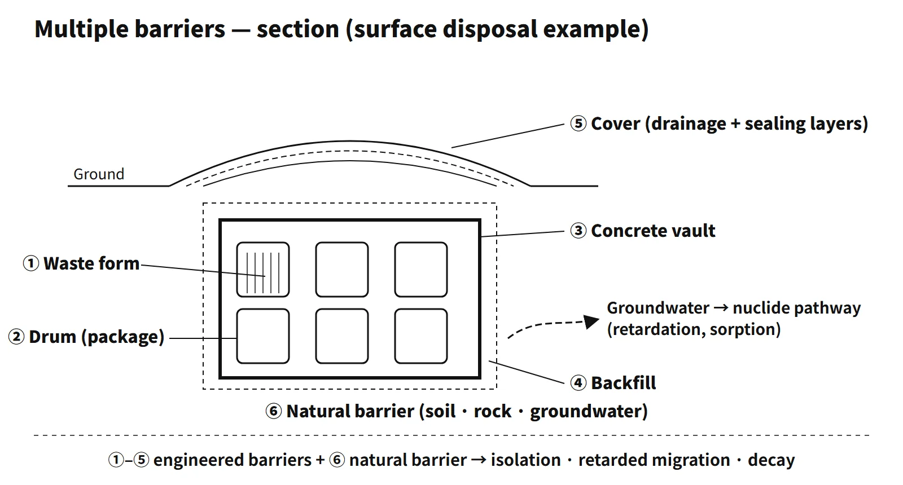

Waste, Fuel Cycle & Decommissioning · C-WD-001
Low- and Intermediate-Level Waste Disposal — Waste Classes, Disposal Methods and Multiple Barriers
Permanent isolation without intent to retrieve: which waste class needs which type of facility, behind which barriers, and why a few hundred years of control is the design horizon.
Disposal of low- and intermediate-level radioactive waste (LILW) is the permanent isolation of radioactive waste other than high-level waste in a disposal facility with no intention of retrieval. Engineered and natural barriers delay the time it takes radionuclides to reach the human environment, so that radioactivity decreases by decay in the meantime. It differs from storage, which assumes retrieval.
Principle and mechanism
Classification — how much isolation a waste needs
The IAEA classification (GSG-1, 2009) has six classes: exempt waste (EW), very short lived waste (VSLW), very low level waste (VLLW), low level waste (LLW), intermediate level waste (ILW) and high level waste (HLW). The classes are tied to the degree of isolation each needs:
| Class | What it needs | Typical disposal route |
|---|---|---|
| Very low level (VLLW) | Activity only somewhat above clearance levels | Landfill-type near-surface facility |
| Low level (LLW) | Limited isolation for a few hundred years | Near-surface disposal |
| Intermediate level (ILW) | Isolation at greater depth | Intermediate depths of tens to hundreds of metres |
| High level (HLW) | Heat-generating and long-lived | Deep geological disposal |
National schemes subdivide LILW along similar lines, typically using activity concentrations relative to clearance levels and nuclide-specific concentration limits as the boundaries. Waste below clearance levels is released from regulatory control and is not disposed of as radioactive waste.
Disposal methods — depth and barriers
IAEA SSR-5 (2011) lists the main facility types: near-surface facilities (trenches, vaults, and rock caverns at depths of tens of metres), intermediate-depth facilities, deep geological repositories and boreholes. Near-surface facilities differ mainly in how much they rely on engineered barriers:
- Rock cavern disposal: disposal in an underground cavern or silo within rock, with natural and engineered barriers
- Engineered surface (vault) disposal: disposal near the ground surface with natural barriers and engineered barriers such as concrete vaults
- Landfill-type (trench) disposal: burial near the ground surface relying essentially on natural barriers
Surface vault and landfill-type disposal share the same location; the difference is whether engineered barriers are present. The general rule is that a waste may go to any facility that provides at least the isolation its class needs, but not to one that provides less: very low level waste may use any method, low level waste is not placed in landfill-type facilities, intermediate level waste needs more isolation than surface or landfill-type facilities provide, and high-level waste needs deep geological disposal. The actual routes are fixed by each country's regulations and the facility's waste acceptance criteria.
![Conceptual underground cross-section showing a landfill-type trench and a concrete surface vault near the ground, a rock-cavern silo at a depth of tens of metres and a deep geological formation, beside a table of the isolation each waste class needs: very low level suits all methods, low level not landfill-type, intermediate level not surface or landfill-type, high level only deep; cards show Drigg (UK, trench to vault, from 1959), Aube (France, surface vaults, from 1992) and SFR (Sweden, rock caverns, from 1988)](../../assets/images/concepts/c-wd-001-lilw-disposal/fig1-disposal-depth-matrix.webp)
Multiple barriers and time — why "a few hundred years"
The engineered barriers run in this order: waste form → drum → concrete vault or silo → backfill → cover (drainage and sealing layers). Around them is the natural barrier of rock, soil and the groundwater environment. The barriers provide isolation, containment and retardation of radionuclide release, and time for decay. The main radionuclides in LILW are Co-60 (half-life 5.27 years) and Cs-137 (30.1 years). In 300 years Cs-137 passes about 10 half-lives and falls to about 1/1,000. This is why near-surface disposal of LLW is designed around limited isolation for a few hundred years, with an institutional control period after closure.
What it means in practice — operating facilities
| Facility | Country | Method | In operation |
|---|---|---|---|
| Aube (CSA) | France | Surface concrete vaults | 1992– |
| Drigg (LLWR) | United Kingdom | Trenches → concrete vaults | 1959– |
| Forsmark (SFR) | Sweden | Rock caverns about 60 m below the seabed | 1988– |
| Rokkasho | Japan | Near-surface concrete pits | 1992– |
| Barnwell | United States | Near-surface trenches | 1971– |
Waste shipped to a disposal facility must meet the facility's waste acceptance criteria. Typical requirements are:
- Solid, stable, non-dispersible form with free liquid strictly limited; homogeneous waste form with leach resistance and mechanical strength
- The nuclides that make up most of the activity identified, and the concentrations of key nuclides such as H-3, C-14, Co-60 and Cs-137 determined; criticality safety for any fissile material
- No removable surface contamination
- Explosive, flammable, corrosive and infectious materials removed, and chelating agents limited
- Packages marked with an identification number, waste class, date and surface dose rate
Safety assessment and performance objectives
Licensing a disposal facility rests on a safety assessment that compares calculated consequences with performance objectives set by the regulator. These typically cover:
- Post-closure normal evolution: an annual individual dose constraint
- Probabilistic (disruptive) events: an annual risk criterion
- Human intrusion after the end of institutional control: a dose criterion, with doses kept as low as reasonably achievable
- Accidents during operation: a separate dose criterion
Institutional control can end only when the performance objectives, including those for human intrusion, are shown to be met. SSR-5 requires passive safety after closure (safety that does not depend on continued active measures), multiple safety functions (isolation and containment of radionuclide migration) and active or passive institutional control.
Siting criteria and social factors
Site evaluation examines meteorology, ground surface, geology, surface water, groundwater, earthquakes, ecology and water resources. The key criteria are:
- Geology: homogeneous bedrock or strata that retard radionuclide migration. Areas prone to erosion, landslides or volcanism are unsuitable; for cavern disposal, limestone and heavily fractured rock are unsuitable
- Surface water and groundwater: above the predicted flood level, with low groundwater velocity and long delay times
- Earthquakes: active fault zones and their vicinity are unsuitable
- Water resources and other: water-source protection zones, and land crossed by airfields, high-voltage lines or gas pipelines, are unsuitable
Where a site falls short, engineered barriers can compensate. Social factors include local acceptance, support for the host region, information disclosure and transparency, and acceptable transport routes.
Regulatory and design criteria
- IAEA GSG-1 (2009): six waste classes (EW, VSLW, VLLW, LLW, ILW, HLW) linked to the degree of isolation and the disposal route.
- IAEA SSR-5 (2011): disposal facility types; passive safety, multiple safety functions and institutional control.
Easily confused pairs
| Item | Rock cavern disposal | Engineered surface (vault) disposal | Landfill-type disposal |
|---|---|---|---|
| Location | Underground rock cavern | Near the surface | Near the surface |
| Barriers | Natural and engineered | Natural and engineered | Natural only |
| Typical waste | Low and some intermediate level | Low and very low level | Very low level |
| Advantages | Excellent isolation, little surface impact | Lower construction cost, easy monitoring and repair | Most economical |
| Disadvantages | Excavation and groundwater management, high construction cost | Affected by rainfall and intrusion, large site | Limited to very low level waste |
Disposal has no intention of retrieval; storage assumes retrieval. Clearance releases material from regulatory control so that it becomes ordinary waste, which is different from disposal in a disposal facility.
Key points at a glance
- Definition: waste other than high-level waste permanently isolated behind multiple barriers with no intention of retrieval (distinct from storage).
- Classification (IAEA GSG-1): EW, VSLW, VLLW, LLW, ILW, HLW — each class tied to the isolation it needs.
- Disposal methods (IAEA SSR-5): near-surface (trenches, vaults, rock caverns at tens of metres), intermediate depth, deep geological, boreholes.
- Surface vault vs landfill-type: same location; the vault adds engineered barriers to the natural ones, the landfill relies on natural barriers only (very low level waste).
- Matching: a waste may go to a facility with at least the isolation its class needs, never less.
- Multiple barriers: waste form → drum → vault or silo → backfill → cover + natural barrier.
- Safety functions: isolation, retardation, decay (Cs-137 over 300 years ≈ 1/1,000).
- Performance objectives: dose constraint for normal evolution, risk criterion for disruptive events, human-intrusion criterion after institutional control.
- Acceptance criteria: solid and stable form, limited free liquid, main nuclides identified, hazardous materials removed.
- Siting: retarding geology, low groundwater velocity, no active faults or water-source zones, plus local acceptance.
